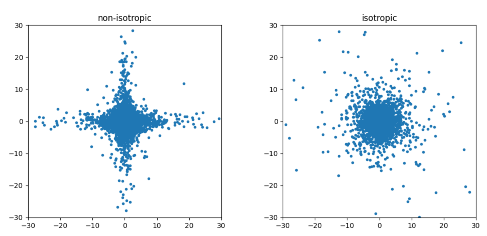

torchlevy.stable_dist
Contents
torchlevy.stable_dist#
Supports the sample, pdf, and score functions from \(\alpha\)-stable distribution.
Function#
torchlevy.stable_dist.sample#
Parameters:
alpha(float): The stability parameter of the distribution, must be in the range (0, 2].beta(float): The skewness parameter of the distribution, must be in the range [-1, 1].size(int or tuple of ints): The shape of the sample to generate.loc(float): The location parameter of the distribution.scale(float): The scale parameter of the distribution.type(torch.dtype): The data type of the sample.reject_threshold(float): The threshold for rejecting samples based on a criterion.is_isotropic(bool): Whether to generate an isotropic sample.clamp_threshold(float): The threshold for sample clamping
Returns:
A sample from a symmetric alpha-stable distribution with the specified parameters
Examples:
from torchlevy import stable_dist
sample = stable_dist.sample(alpha=1.5, size=10000)
print(f"min : {sample.min()}")
print(f"max : {sample.max()}")
# min : -544.177001953125
# max : 426.45806884765625
The code above serves as a prime illustration of the heavy tail characteristic inherent in the alpha stable distribution. It is evident that both the minimum and maximum values are considerably distant from the mode.
import torch
from torchlevy import stable_dist
import matplotlib.pyplot as plt
sample = stable_dist.sample(alpha=1.7, size=10000)
plt.hist(sample.cpu(), 2000, facecolor='blue', alpha=0.5, label="samples")
plt.subplots_adjust(left=0.15)
plt.xlim(-15, 15)
plt.legend()
plt.show()
{kind=link}
As demonstrated in the code above, the alpha stable sample conforms closely to the distribution of a ball shape.
from torchlevy import stable_dist
import matplotlib.pyplot as plt
alpha = 1.5
plt.subplot(121)
non_isotropic_noise = stable_dist.sample(alpha, size=[10000, 2], is_isotropic=False).cpu()
plt.scatter(non_isotropic_noise[:, 0], non_isotropic_noise[:, 1], marker='.')
plt.gca().set_aspect('equal')
plt.xlim([-30, 30])
plt.ylim([-30, 30])
plt.title("non-isotropic")
plt.subplot(122)
isotropic_noise = stable_dist.sample(alpha, size=[10000, 2], is_isotropic=True).cpu()
plt.scatter(isotropic_noise[:, 0], isotropic_noise[:, 1], marker='.')
plt.gca().set_aspect('equal')
plt.xlim([-30, 30])
plt.ylim([-30, 30])
plt.title("isotropic")
plt.show()

The example above is a comparison between the symmetric alpha table distribution and the isotropic alpha table. In the plot on the left, the x and y coordinates of the point of dimension are independently sampled. As a result, you can see that most samples are near axis. On the other hand, in the plot on the right, the point was sampled from the 2d isotropc distribution. As a result, it can be seen that there is generally an invariant distribution in the direction.
torchlevy.stable_dist.pdf#
Parameters::
x: a tensor of values at which the PDF is evaluated.alpha: alpha parameter of the symmetric alpha-stable distribution.beta: beta parameter of the symmetric alpha-stable distribution.is_cache: a boolean indicating whether sampling should be based on the linear interpolation of cached values within a 0.01 interval.is_isotropic: a boolean indicating whether the distribution should be isotropic, i.e. rotationally symmetrical and the same in all directions.
Returns:
a tensor representing the PDF of the symmetric alpha-stable distribution.
Examples:
import torch
from torchlevy import stable_dist
x = torch.arange(-2, 2, 0.5)
print(stable_dist.pdf(x, alpha=1.7))
# tensor([0.0928, 0.1477, 0.2108, 0.2633, 0.2840, 0.2633, 0.2108, 0.1477])
x = torch.arange(-15, 15, 0.1)
alphas = [1.2, 1.5, 1.8]
for alpha in alphas:
pdf = stable_dist.pdf(x, alpha)
plt.plot(x.cpu(), pdf.cpu(), lw=2, label=f"alpha={alpha}")
plt.xlim((-range_, range_))
plt.ylim((0, 0.4))
plt.legend()
plt.show()
{kind=link}
torchlevy.stable_dist.score#
Parameters:
x: a tensor of values at which the score function is evaluated.alpha: a float representing the alpha parameter of the symmetric alpha-stable distribution.beta: a float representing the beta parameter of the symmetric alpha-stable distribution.type: a string indicating the type of score function to compute. Options are:“cft”: using the Fourier transform.
“cft2”: using an alternative formulation of the Fourier transform.
“backpropagation”: using backpropagation of the probability density function (PDF). Note: this option requires more memory.
is_isotropic: a boolean indicating whether the distribution is isotropic.is_fdsm: a boolean indicating whether the score function is expressed as fractional DSM.
Returns:
a tensor representing the score function of the symmetric alpha-stable distribution.
Examples:
import torch
from torchlevy import stable_dist
x = torch.arange(-2, 2, 0.5)
print(stable_dist.score(x, alpha=1.7))
# tensor([ 1.1765, 0.8824, 0.5882, 0.2941, 0.0000, -0.2941, -0.5882, -0.8824])
import torch
from torchlevy import stable_dist
import matplotlib.pyplot as plt
range_ = 5
x = torch.arange(-range_, range_, 0.1)
alphas = [1.2, 1.5, 1.8]
for alpha in alphas:
score = stable_dist.score(x, alpha).cpu()
plt.plot(x.cpu(), score, lw=2, label=f"alpha={alpha}")
plt.xlim((-range_, range_))
plt.legend()
plt.show()
{kind=link}